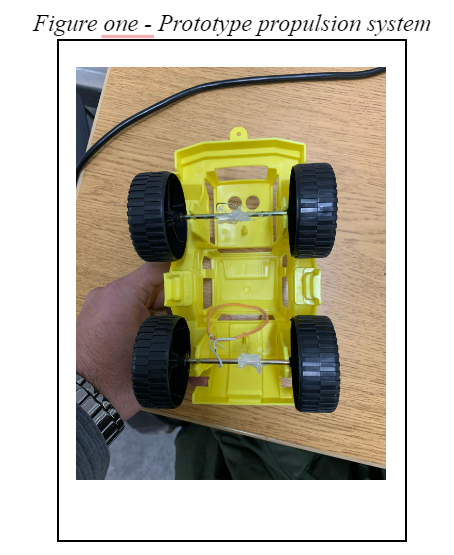
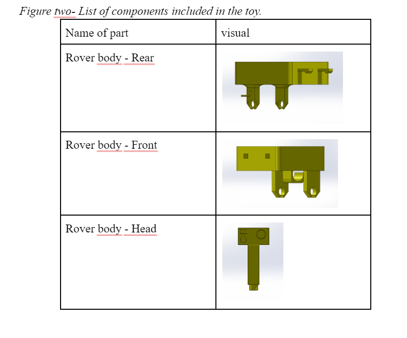
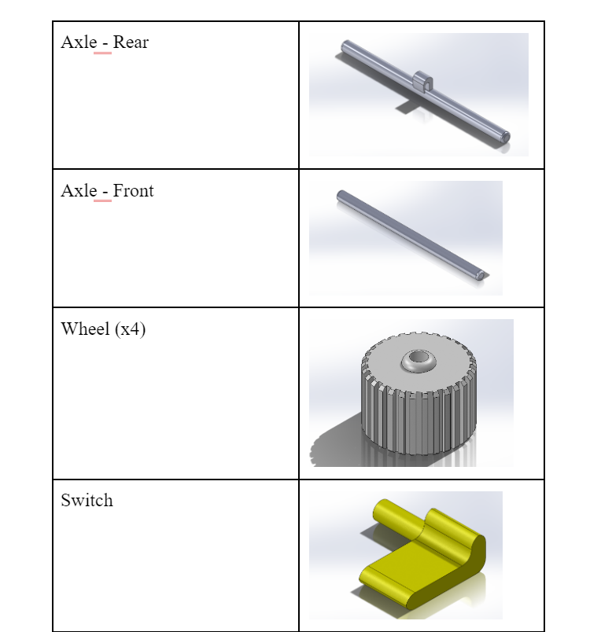
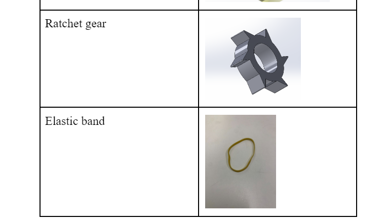
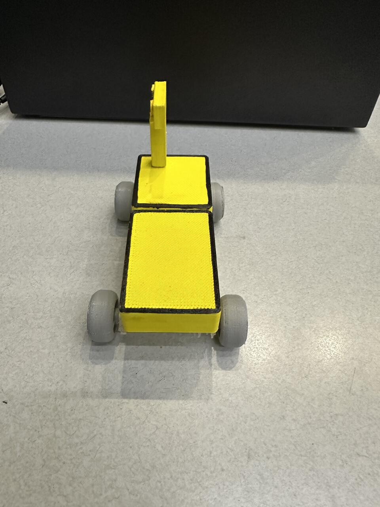
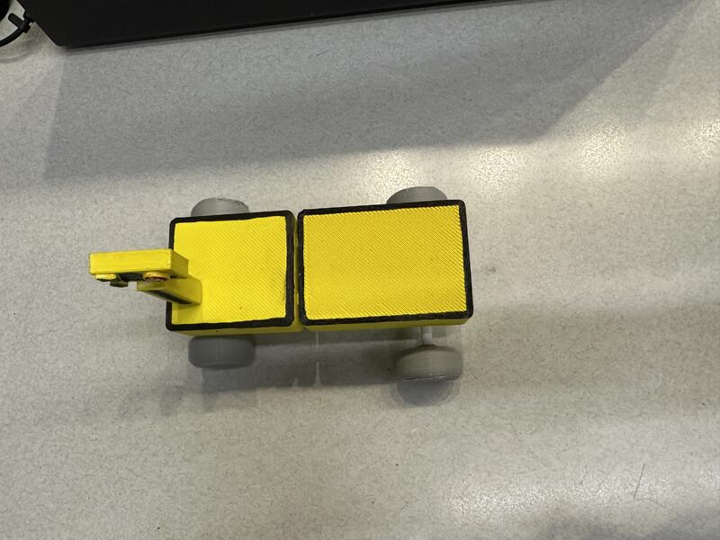
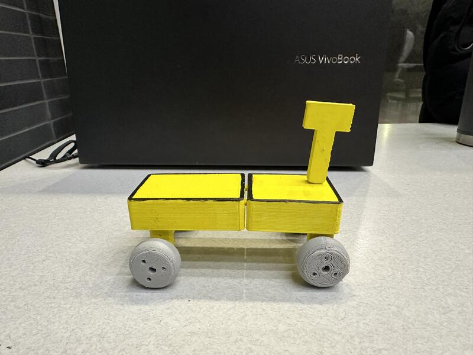

University Course Design Projects:
Engineering Design I: Teddy Bear WheelChair (Robotic Device)
In our first-year design course (ENGG*1100), my interdisciplinary team and I were tasked with designing, building, and coding a wheelchair for a teddy bear.
The project was both fun and challenging as we had to ensure the wheelchair could complete various tests to assess its performance and accuracy. One of the most
interesting parts of the project was a target-practice test, where we had to integrate a ping-pong projectile system into the design. It was a great way to apply
our knowledge and work together as a team.
Building the Mechanical Chassis of the Teddy Bear Wheel Chair (Robotic Device)

Arranging the Breadboard and Components
First, I placed the motor driver IC on the breadboard just as it appears in the picture above. I make sure it’s positioned in a central location on the breadboard to
easily connect it to other components. Then, I grab some jumper wires and start connecting the Arduino to the breadboard. I usually like to use different colors for
different purposes—red for power, black for ground, and other colors for signal lines, which helps me keep track of the connections more easily.
Connecting the Motor
Next, I attached the motor to the motor driver. I double-checked the motor’s documentation to make sure I’m aware of its current and voltage requirements.
This ensures I make the connections securely and avoid any potential short circuits or damage to the motor and driver. I connect the motor leads to the output terminals of
the motor driver, carefully noting the polarity to ensure correct directional movement.
Power Connections
Finally, I connected the battery clip to the breadboard. I plugged the red wire into the breadboard’s positive rail and the black wire into the negative rail.
I then used jumper wires to extend power from the breadboard’s power rails to both the Arduino and the motor driver IC. It’s crucial to make sure that both components
received the correct voltage; for the Arduino, it’s typically 5V, and the motor driver’s voltage varied depending on the motor’s specifications.


These sketches are a rough look on how the final product was going to look like.


Initially, the vehicle was powered directly by a battery source, but we observed that we could enhance the setup. To do this, we decided to reroute one of
the red wires. Originally, this wire was connected directly to the battery. We changed its connection point on the breadboard to a different slot specifically
meant for a stable voltage supply.
This alteration was crucial because it allowed us to better manage the power distribution across the vehicle’s circuit. By connecting the red wire to a voltage
slot on the breadboard, we effectively centralized the power distribution, which helped in stabilizing the motor operation and the overall functionality of the vehicle.
It’s a simple change, but it makes the vehicle more reliable because the voltage regulation is more consistent.
After making this change, we thoroughly tested the vehicle to ensure it operated correctly. We wanted to be certain that it could move back and forth reliably,
which it did, proving our modification was successful. This was a great relief and a point of satisfaction for us, as it confirmed our understanding and application
of basic electronic and power distribution principles.

Chassis and Plates: The chassis is built from metal plates with multiple holes. These perforations allow me to easily adjust and align the motor and other components
for optimal placement.
Motor Installation: I’ve mounted the motor using metal brackets to ensure it stays securely in place. This is crucial to avoid vibrations or misalignments that could
hamper performance.
Wiring: There are several wires visible, connected to the motor and potentially other parts. I’ve taken care to route and secure these wires to prevent any interference
or damage during the robot’s operation.
Hardware: I’ve used screws and bolts to assemble the plates and secure the motor. Choosing the right hardware is essential to maintain the structural integrity
of the vehicle.
Wheels and Axles: The wheels are partially visible, and I’ve carefully aligned their axles to ensure smooth movement and steering.


I painted each individual piece as well as stiched some of the printed images on to the cardboard pieces with yarn.
Final Product:
Front View

Side View #1

Side View #2

Back View

To make the launcher functional, I used a small spring-loaded mechanism, allowing the ping pong balls to be loaded into a tube or slot. The trigger mechanism is
attached to the easy-to-reach button.
For power, since it’s a robotic device, I integrated the launcher with the existing electrical system, using a small motor to automate the shooting process. I’d ensure
that the wiring is neat and hidden, routed through the back of the chair, and stitched along the edges of the wheelchair frame to keep the aesthetic clean.
Lastly, I tested the alignment and made any necessary adjustments to make sure the launcher is stable and fires the ping pong balls smoothly, without compromising the
wheelchair’s mobility or the overall balance of the device.
Engineering Design 2: 3D Printed Toy
In my Engineering and Design II course, we’re building on our design skills by working in teams to reverse engineer everyday objects and create solutions to
complex design problems. Our project this semester is to design a 3D-printed toy that fits in a Kinder Egg, adheres to size and weight constraints, and incorporates
a mechanism to store and release energy for motion or projectile launching.




Constraints:
The following constraints are set in place to ensure that the design of the toy is cost-effective, able to be manufactured in the way that Fererro desires,
is an original design, and is a design that can be reasonably put together while ensuring Fererro is happy with the final design.
Materials:
The toy’s components should be constructed with at least 75% of their weight in mind for 3D printing utilizing PLA plastic and fused deposition modeling (FDM).
When disassembled, every part should fit within a 10 cm tall Kinder “Egg” that has a horizontal split in the middle.
When built, all parts should fit within the Kinder “Egg,” which is 10 cm tall.
There cannot be any sub-assemblies in the design that come from other manufacturers or toys that already exist.
The item needs to be able to be put together without the need of any glue, tape, or melted plastic of any form.
The item needs to be able to be put together without the need of any glue, tape, or melted plastic of any form.
Energy:
When the operator triggers motion, the toy must be at rest and use its stored potential energy to transform into kinetic energy.
The stored potential energy must be the only source of motion for the toy, requiring no additional input from the user.
The toy needs to be free of any potential energy stored when disassembled.
The toy needs to have the ability to store potential energy and convert it to kinetic energy when the operator takes an action that starts a motion.
Launch:
Toy designs that are intended to fly must travel a minimum of 2.5 meters as a whole.
The toy needs to be categorized as a projectile toy or a flying toy (vertical motion).
Toy designs based on projectiles must be able to go through the air a minimum of 2.5 meters vertically.
Toy projectiles must have their launch base held in the operator’s hand or supported by a surface.
There cannot be a detachable pin in the assembly’s trigger mechanism.
The toy (or launch base, for projectile toys) must stay fully built after activating.
Operators must not need to help the toy—that is, provide it with more energy—in order
for it to finish its intended motion during or after triggering.
Other:
The “Commercial Space Travel” theme is a prerequisite for the toy.
The toy needs to be secure for both the user and others nearby.
Criteria: The following criteria are put into place in order to make sure that the toy functions in a manner which ensures that not only Fererro is happy, but to ensure
that the experience is enjoyable for all parties involved in playing with the toy.
Launch: The toy should move as quickly as it can in a vertical manner. The toy should fly as high as it can, at least higher than the necessary 2.5 meters. The projectile’s
course should be as far away as it can be from the operator and any onlookers.
Design: The toy should have the most imaginative design possible. Reduce the number of pointy and sharp edges on the item. Increase aesthetic appeal to the fullest Reduce the
amount, weight, and expense. Optimize your delight and fun.
Size: When designing toys, it’s important to prioritize creating larger and faster designs. The toy must occupy at least 1000 cm³ in volume.
Detailed Final Design: The final design of the toy featured an elastic band driven mars rover themed space exploration vehicle. The main body of the rover consisted of two
separate body components which could be attached by snap fit joints located on the joining faces of both components. Each body component had two suspension arms which extruded
downwards and featured an opening for the axles. Each opening was slightly larger than the axle, allowing easy assembly and the free rotation of the axle thus reducing mechanical
loss due to friction between parts. The rear body component featured a small hole and a small extrusion. The hole is a joint for the switch mechanism mentioned previously and is
again slightly larger than the joint on the switch itself. This allows for the switch to be rotated when the user wishes to toggle the mechanism to store or release kinetic energy.
The small extrusion acts as a stopper for the switch to ensure that once the user wishes to store kinetic energy, the switch will refuse any rotation from the axle. The front
component of the body features a hook connected to the underbody of the chassis. This is in place in order to mount the elastic used to propel the toy. The rear axle features the
associated mounting point with another hook. Once the elastic is connected through both hooks, the toy can be winded up and kinetic energy can be accumulated. A full list of parts
can be found in figure three.
Final Product:


